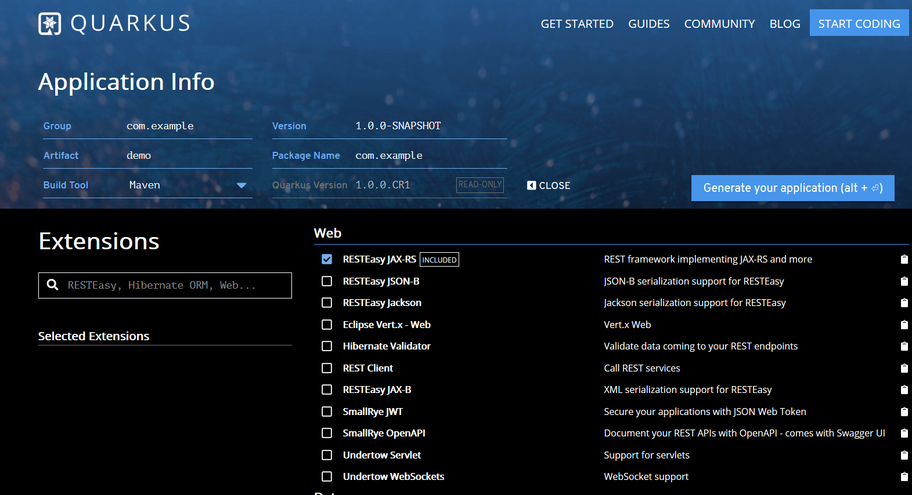
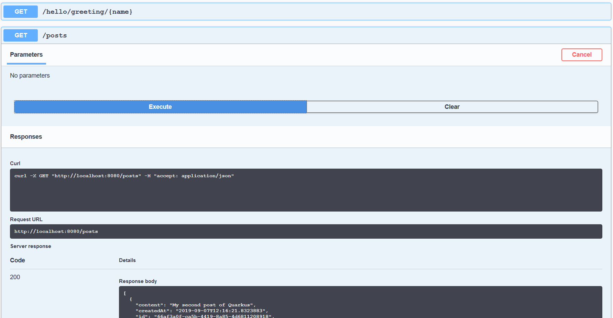

Kickstart your first Quarkus application¶
Quarkus is a container-first framework for building cloud native applications.
Getting Started¶
First of all, make you have the following software installed.
- JDK 8 +
- Apache Maven 3.5+
- GraalVM to build native image
- Docker
Go to https://code.quarkus.io , and generate a project skeleton.
- Group: com.example
- Artifact: demo
- Extensions: RESTEasy JAX-RS

Press Generate your project button to get the project skeleton.
Extract files from the download archive, and import into your favorite IDE.
Follow the Getting Started guide, create your first JAX-RS Resource class.
@Path("/hello")
public class GreetingResource {
@Inject
GreetingService service;
@GET
@Produces(MediaType.TEXT_PLAIN)
@Path("/greeting/{name}")
public String greeting(@PathParam("name") String name) {
return service.greet(name);
}
@GET
@Produces(MediaType.TEXT_PLAIN)
public String hello() {
return "hello";
}
}
The GreetingService is a CDI managed bean. We declare it as ApplicationScoped scope, and make it available in the application globally.
import javax.enterprise.context.ApplicationScoped;
@ApplicationScoped
public class GreetingService {
public String greet(String name) {
return "Hello " + name+"!";
}
}
Quarkus does not require a JAX-RS
Applicationto activate JAX-RS support.
Run the following command to build the application.
mvn clean package
After it is done, there are two jars in the target folder. xxx-runner.jar is a runnable jar created by quarkus-maven-plugin.
>java -jar target\demo-1.0.0-SNAPSHOT-runner.jar
In development stage, you can run the application in a debug mode.
mvn compile quarkus:dev
[INFO] --- quarkus-maven-plugin:1.0.0.CR1:dev (default-cli) @ demo ---
Listening for transport dt_socket at address: 5005
2019-09-06 11:39:08,764 INFO [io.qua.dep.QuarkusAugmentor] (main) Beginning quarkus augmentation
2019-09-06 11:39:09,560 INFO [io.qua.dep.QuarkusAugmentor] (main) Quarkus augmentation completed in 796ms
2019-09-06 11:39:10,072 INFO [io.quarkus] (main) Quark1.0.0.CR11.1 started in 1.464s. Listening on: http://[::]:8080
2019-09-06 11:39:10,072 INFO [io.quarkus] (main) Installed features: [cdi, resteasy]
curl command.
>curl http://localhost:8080/hello
hello
Quarkus provides test facilities with JUnit 5 and RestAssured. There are two dependencies already added in the pom.xml.
<dependency>
<groupId>io.quarkus</groupId>
<artifactId>quarkus-junit5</artifactId>
<scope>test</scope>
</dependency>
<dependency>
<groupId>io.rest-assured</groupId>
<artifactId>rest-assured</artifactId>
<scope>test</scope>
</dependency>
Create a test case for the GreetingResourceTest.
@QuarkusTest
public class GreetingResourceTest {
@Test
public void testHelloEndpoint() {
given()
.when().get("/hello")
.then()
.statusCode(200)
.body(is("hello"));
}
@Test
public void testGreetingEndpoint() {
String uuid = UUID.randomUUID().toString();
given()
.pathParam("name", uuid)
.when().get("/hello/greeting/{name}")
.then()
.statusCode(200)
.body(is("Hello " + uuid + "!"));
}
}
QuarkusTest is composed with JUnit 5 @ExtendedWith.
@ExtendWith(QuarkusTestExtension.class)
@Retention(RetentionPolicy.RUNTIME)
@Target(ElementType.TYPE)
public @interface QuarkusTest {
}
You can customize your own annotation with @QuarkusTest like this.
@Transactional
@Stereotype
@QuarkusTest
public @interface TransactionalQuarkusTest{}
OK , let's create RESTful APIs for a blog application that I have used in several samples on Github.
Building RESTful APIs¶
Let's assume this simple blog system should satisfy the following requirements:
- A user can view all posts
- A user can post an new blog entry
- A user can view all comments on the posts
- A user can write comments on the posts
- An admin role can moderate the post and delete the post
- ...
Currently we skip the security issues. We will discuss it in the further posts.
Following the REST convention and HTTP protocol specification, the RESTful APIs are designed as the following table.
| Uri | Request | Response | Description |
|---|---|---|---|
| /posts | GET | 200, [{'id':1, 'title'},{}] | Get all posts |
| /posts | POST {'id':1, 'title':'test title','content':'test content'} | 201 | Create a new post |
| /posts/{id} | GET | 200, {'id':1, 'title'} | Get a post by id |
| /posts/{id} | PUT {'title':'test title','content':'test content'} | 204 | Update a post |
| /posts/{id} | DELETE | 204 | Delete a post by id |
| /posts/{id}/comments | GET | 200, [{'id':1, 'content':'comment content'},{}] | Get all comments of the certain post |
| /posts/{id}/comments | POST {'content':'test content'} | 201 | Create a new comment of the certain post |
Create a POJO class for representing Post entity.
public class Post implements Serializable {
String id;
String title;
String content;
LocalDateTime createdAt;
public static Post of(String title, String content) {
Post post = new Post();
post.setId(UUID.randomUUID().toString());
post.setCreatedAt(LocalDateTime.now());
post.setTitle(title);
post.setContent(content);
return post;
}
//getters and setters
}
The of is a factory method to create a new Post quickly.
Create a PostRepository to retrieve data from and save to the "database". We used a dummy map here, will replace it with a real database later.
@ApplicationScoped
public class PostRepository {
static Map<String, Post> data = new ConcurrentHashMap<>();
public List<Post> all() {
return new ArrayList<>(data.values());
}
public Post getById(String id) {
return data.get(id);
}
public Post save(Post post) {
data.put(post.getId(), post);
return post;
}
public void deleteById(String id) {
data.remove(id);
}
}
Now create a PostResource to expose the posts endpoints to public.
@Path("/posts")
@RequestScoped
public class PostResource {
private final static Logger LOGGER = Logger.getLogger(PostResource.class.getName());
private final PostRepository posts;
@Context
ResourceContext resourceContext;
@Context
UriInfo uriInfo;
@Inject
public PostResource(PostRepository posts) {
this.posts = posts;
}
@GET
@Produces(MediaType.APPLICATION_JSON)
public Response getAllPosts() {
return ok(this.posts.all()).build();
}
@POST
@Consumes(MediaType.APPLICATION_JSON)
public Response savePost(@Valid Post post) {
Post saved = this.posts.save(Post.of(post.getTitle(), post.getContent()));
return created(
uriInfo.getBaseUriBuilder()
.path("/posts/{id}")
.build(saved.getId())
).build();
}
@Path("{id}")
@GET
@Produces(MediaType.APPLICATION_JSON)
public Response getPostById(@PathParam("id") final String id) {
Post post = this.posts.getById(id);
return ok(post).build();
}
@Path("{id}")
@PUT
@Consumes(MediaType.APPLICATION_JSON)
public Response updatePost(@PathParam("id") final String id, @Valid Post post) {
Post existed = this.posts.getById(id);
existed.setTitle(post.getTitle());
existed.setContent(post.getContent());
Post saved = this.posts.save(existed);
return noContent().build();
}
@Path("{id}")
@DELETE
public Response deletePost(@PathParam("id") final String id) {
this.posts.deleteById(id);
return noContent().build();
}
}
Almost done, let's initialize some data for test purpose. Quarkus provides lifecycle events that you can observes in a CDI bean.
@ApplicationScoped
public class AppInitializer {
private final static Logger LOGGER = Logger.getLogger(AppInitializer.class.getName());
@Inject
private PostRepository posts;
void onStart(@Observes StartupEvent ev) {
LOGGER.info("The application is starting...");
Post first = Post.of("Hello Quarkus", "My first post of Quarkus");
Post second = Post.of("Hello Again, Quarkus", "My second post of Quarkus");
this.posts.save(first);
this.posts.save(second);
}
void onStop(@Observes ShutdownEvent ev) {
LOGGER.info("The application is stopping...");
}
}
Let's start the application via:
mvn quarkus:dev
curl.
$ curl http://localhost:8080/posts
Could not find MessageBodyWriter for response object of type: java.util.ArrayList of media type: application/json
media type: application/json can not be handled.
In the former steps, we have just created a GreetingResource, only plain/text media type is used for test purpose. In a real world application, JSON is the most popular representation format.
To fix the issue, we should add JSON support for the representation marshalling and unmarshalling.
The quarkus-maven-plugin provides several goals for managing the extensions in the project.
The list-extensions goal will print all available extensions in the Quarkus ecosystem.
> mvn quarkus:list-extensions
...
Current Quarkus extensions available:
Agroal - Database connection pool quarkus-agroal
Amazon DynamoDB quarkus-amazon-dynamodb
Apache Kafka Client quarkus-kafka-client
Apache Kafka Streams quarkus-kafka-streams
Apache Tika quarkus-tika
Arc quarkus-arc
AWS Lambda quarkus-amazon-lambda
Flyway quarkus-flyway
Hibernate ORM quarkus-hibernate-orm
Hibernate ORM with Panache quarkus-hibernate-orm-panache
Hibernate Search + Elasticsearch quarkus-hibernate-search-elasticsearch
Hibernate Validator quarkus-hibernate-validator
Infinispan Client quarkus-infinispan-client
JDBC Driver - H2 quarkus-jdbc-h2
JDBC Driver - MariaDB quarkus-jdbc-mariadb
JDBC Driver - PostgreSQL quarkus-jdbc-postgresql
Jackson quarkus-jackson
JSON-B quarkus-jsonb
JSON-P quarkus-jsonp
Keycloak quarkus-keycloak
Kogito quarkus-kogito
Kotlin quarkus-kotlin
Kubernetes quarkus-kubernetes
Kubernetes Client quarkus-kubernetes-client
Mailer quarkus-mailer
MongoDB Client quarkus-mongodb-client
Narayana JTA - Transaction manager quarkus-narayana-jta
Neo4j client quarkus-neo4j
Reactive PostgreSQL Client quarkus-reactive-pg-client
RESTEasy quarkus-resteasy
RESTEasy - JSON-B quarkus-resteasy-jsonb
RESTEasy - Jackson quarkus-resteasy-jackson
Scheduler quarkus-scheduler
Security quarkus-elytron-security
Security OAuth2 quarkus-elytron-security-oauth2
SmallRye Context Propagation quarkus-smallrye-context-propagation
SmallRye Fault Tolerance quarkus-smallrye-fault-tolerance
SmallRye Health quarkus-smallrye-health
SmallRye JWT quarkus-smallrye-jwt
SmallRye Metrics quarkus-smallrye-metrics
SmallRye OpenAPI quarkus-smallrye-openapi
SmallRye OpenTracing quarkus-smallrye-opentracing
SmallRye Reactive Streams Operators quarkus-smallrye-reactive-streams-operators
SmallRye Reactive Type Converters quarkus-smallrye-reactive-type-converters
SmallRye Reactive Messaging quarkus-smallrye-reactive-messaging
SmallRye Reactive Messaging - Kafka Connector quarkus-smallrye-reactive-messaging-kafka
SmallRye Reactive Messaging - AMQP Connector quarkus-smallrye-reactive-messaging-amqp
REST Client quarkus-rest-client
Spring DI compatibility layer quarkus-spring-di
Spring Web compatibility layer quarkus-spring-web
Swagger UI quarkus-swagger-ui
Undertow quarkus-undertow
Undertow WebSockets quarkus-undertow-websockets
Eclipse Vert.x quarkus-vertx
Add RESTEasy - JSON-B to this project.
>mvn quarkus:add-extension -Dextension=resteasy-jsonb
...
[INFO] --- quarkus-maven-plugin:1.0.0.CR1:add-extension (default-cli) @ demo ---
? Adding extension io.quarkus:quarkus-resteasy-jsonb
Both quarkus-resteasy-jsonb and quarkus-resteasy-jackson work. We use quarkus-resteasy-jsonb here.
Open the pom.xml file, there is a new dependency added. Of course, you can add this extension in Maven dependencies directly.
<dependency>
<groupId>io.quarkus</groupId>
<artifactId>quarkus-resteasy-jsonb</artifactId>
</dependency>
Restart the application and try again.
> curl http://localhost:8080/posts
[{"content":"My second post of Quarkus","createdAt":"2019-09-06T16:48:03.0799469","id":"8059eb1d-5d26-4eb3-b9df-39151a5f71f5","title":"Hello Again, Quarkus"},{"content":"My first post of Quarkus","createdAt":"2019-09-06T16:48:03.0799469","id":"96974c19-cdca-4d34-a589-68728cf1e2ed","title":"Hello Quarkus"}]
Now let's move to Comment resource.
Create a POJO for presenting Comment entity.
public class Comment implements Serializable {
private String id;
private String post;
private String content;
private LocalDateTime createdAt;
public static Comment of(String postId, String content) {
Comment comment = new Comment();
comment.setId(UUID.randomUUID().toString());
comment.setContent(content);
comment.setCreatedAt(LocalDateTime.now());
comment.setPost(postId);
return comment;
}
//getters and setters
}
Create a dummy CommentRepository for Comment.
@ApplicationScoped
public class CommentRepository {
static Map<String, Comment> data = new ConcurrentHashMap<>();
public List<Comment> all() {
return new ArrayList<>(data.values());
}
public Comment getById(String id) {
return data.get(id);
}
public Comment save(Comment comment) {
data.put(comment.getId(), comment);
return comment;
}
public void deleteById(String id) {
data.remove(id);
}
public List<Comment> allByPostId(String id) {
return data.values().stream().filter(c -> c.getPost().equals(id)).collect(toList());
}
}
Create a CommentResource class to expose comments endpoints.
@Unremovable
@RegisterForReflect
@RequestScoped
public class CommentResource {
private final static Logger LOGGER = Logger.getLogger(CommentResource.class.getName());
private final CommentRepository comments;
@Context
UriInfo uriInfo;
@Context
ResourceContext resourceContext;
@PathParam("id")
String postId;
@Inject
public CommentResource(CommentRepository commentRepository) {
this.comments = commentRepository;
}
@GET
public Response getAllComments() {
return ok(this.comments.allByPostId(this.postId)).build();
}
@POST
public Response saveComment(Comment commentForm) {
Comment saved = this.comments.save(Comment.of(this.postId, commentForm.getContent()));
return created(
uriInfo.getBaseUriBuilder()
.path("/posts/{id}/comments/{commentId}")
.build(this.postId, saved.getId())
).build();
}
}
Currently we have to add @Unremovable on CommentResource to make it work in Quarkus, see question on stackoverflow and Quarkus issue#3919.
Maybe you have noticed we have not added a @Path on this class. Comment can be designed as a sub resources of PostResource. JAXRS has a good mechanism to register a sub resource in the parent.
Add the following method in the PostResource we have created.
public class PostResource{
//other methods are omitted here.
@Path("{id}/comments")
public CommentResource commentResource() {
return resourceContext.getResource(CommentResource.class);
}
}
Let's try to add some comments.
$ curl -v -X POST http://localhost:8080/posts/e1ddbe3d-2964-4b1e-8aa8-1d3be8e30c3c/comments -H "Content-Type:application/json" -H "Accept:application/json" -d "{\"content\":\"test comment\"}"
> POST /posts/e1ddbe3d-2964-4b1e-8aa8-1d3be8e30c3c/comments HTTP/1.1
> Host: localhost:8080
> User-Agent: curl/7.65.0
> Content-Type:application/json
> Accept:application/json
> Content-Length: 26
>
< HTTP/1.1 201 Created
< Connection: keep-alive
< Location: http://localhost:8080/posts/e1ddbe3d-2964-4b1e-8aa8-1d3be8e30c3c/comments/a4c14681-cc5e-42b6-aba2-02a83263cd95
< Content-Length: 0
< Date: Sat, 07 Sep 2019 07:31:28 GMT
<
It is created successfully, and return a 201 status code. The location header in the response is the newly added comment.
Check if the comment is existed.
>curl http://localhost:8080/posts/e1ddbe3d-2964-4b1e-8aa8-1d3be8e30c3c/comments -H "Accept:application/json"
[{"content":"test comment","createdAt":"2019-09-07T15:31:28.306218","id":"a4c14681-cc5e-42b6-aba2-02a83263cd95","post":"e1ddbe3d-2964-4b1e-8aa8-1d3be8e30c3c"}]
Exception Handling and Bean Validation¶
JAX-RS provides exception handling with it's built-in ExceptionMapper.
Chang the getPostById method of PostResource to the following.
public Response getPostById(@PathParam("id") final String id) {
Post post = this.posts.getById(id);
if (post == null) {
throw new PostNotFoundException(id);
}
return ok(post).build();
}
If the post is not found, throw a PostNotFoundException.
public class PostNotFoundException extends RuntimeException {
public PostNotFoundException(String id) {
super("Post:" + id + " was not found!");
}
}
Create an ExceptionMapper to handle this exception.
@Provider
public class PostNotFoundExceptionMapper implements ExceptionMapper<PostNotFoundException> {
@Override
public Response toResponse(PostNotFoundException exception) {
return status(Response.Status.NOT_FOUND).entity(exception.getMessage()).build();
}
}
> curl -v http://localhost:8080/posts/nonexisted
> GET /posts/nonexisted HTTP/1.1
> Host: localhost:8080
> User-Agent: curl/7.55.1
> Accept: */*
>
> < HTTP/1.1 404 Not Found
> < Connection: keep-alive
> < Content-Type: application/json
> < Content-Length: 30
> < Date: Fri, 06 Sep 2019 09:58:28 GMT
> <
> Post:nonexisted was not found!
Like the Bean Validation support in Java EE/JAX-RS, Quarkus also provides seamless Bean Validation support via Hibernate Validator.
Add hibernate-validator extension to this project.
> mvn quarkus:add-extension -Dextension=hibernate-validator
It will add artifact quarkus-hibernate-validator into dependencies.
<dependency>
<groupId>io.quarkus</groupId>
<artifactId>quarkus-hibernate-validator</artifactId>
</dependency>
For example, when a user comments on a post, the comment content should not be empty.
Create a POJO class for representing the Comment form data.
public class CommentForm implements Serializable {
@NotEmpty
private String content;
public static CommentForm of(String content) {
CommentForm form= new CommentForm();
form.setContent(content);
return form;
}
//getters and setters
}
Change the saveComment method of CommentResource like this.
public Response saveComment(@Valid CommentForm commentForm) {...}
@Valid indicates the request body should be validated by Bean validation framework when this method is invoked. If the validation is failed, a ConstraintViolationException will be thrown.
Create a ExceptionMapper to handle this exception.
@Provider
public class BeanValidationExceptionMapper implements ExceptionMapper<ConstraintViolationException> {
@Override
public Response toResponse(ConstraintViolationException exception) {
Map<String, String> errors = new HashMap<>();
exception.getConstraintViolations()
.forEach(v -> {
errors.put(lastFieldName(v.getPropertyPath().iterator()), v.getMessage());
});
return status(Response.Status.BAD_REQUEST).entity(errors).build();
}
private String lastFieldName(Iterator<Path.Node> nodes) {
Path.Node last = null;
while (nodes.hasNext()) {
last = nodes.next();
}
return last.getName();
}
}
Verify if it works.
>$ curl -v -X POST http://localhost:8080/posts/e1ddbe3d-2964-4b1e-8aa8-1d3be8e30c3c/comments -H "Content-Type:application/json" -H "Accept:application/json" -d "{\"content\":\"\"}"
> POST /posts/e1ddbe3d-2964-4b1e-8aa8-1d3be8e30c3c/comments HTTP/1.1
> Host: localhost:8080
> User-Agent: curl/7.65.0
> Content-Type:application/json
> Accept:application/json
> Content-Length: 14
>
< HTTP/1.1 400 Bad Request
< Connection: keep-alive
< Content-Type: application/json
< Content-Length: 31
< Date: Sat, 07 Sep 2019 03:20:37 GMT
<
...
{"content":"must not be empty"}
Visualizing APIs with MP OpenAPI and SwaggerUI¶
The original Swagger schema was standardized as OpenAPI, and Microprofile brings it into Java EE by Microprofile OpenAPI Spec.
Quarkus provides an extension to support Microprofile OpenAPI.
Install openapi extension via quarkus-maven-plugin.
mvn quarkus:add-extension -Dextension=openapi
It will add quarkus-smallrye-openapi dependency into the pom.xml file.
<dependency>
<groupId>io.quarkus</groupId>
<artifactId>quarkus-smallrye-openapi</artifactId>
</dependency>
Start the application, and try to access http://localhost:8080/openapi.
> curl http://localhost:8080/openapi
---
openapi: 3.0.1
info:
title: Generated API
version: "1.0"
paths:
/hello:
get:
responses:
200:
description: OK
content:
text/plain:
schema:
$ref: '#/components/schemas/String'
/hello/async:
get:
responses:
200:
description: OK
content:
text/plain:
schema:
type: string
/hello/greeting/{name}:
get:
parameters:
- name: name
in: path
required: true
schema:
$ref: '#/components/schemas/String'
responses:
200:
description: OK
content:
text/plain:
schema:
$ref: '#/components/schemas/String'
/posts:
get:
responses:
200:
description: OK
content:
application/json: {}
post:
requestBody:
content:
application/json:
schema:
$ref: '#/components/schemas/Post'
responses:
200:
description: OK
content:
'*/*': {}
/posts/{id}:
get:
parameters:
- name: id
in: path
required: true
schema:
$ref: '#/components/schemas/String'
responses:
200:
description: OK
content:
application/json: {}
put:
parameters:
- name: id
in: path
required: true
schema:
$ref: '#/components/schemas/String'
requestBody:
content:
application/json:
schema:
$ref: '#/components/schemas/Post'
responses:
200:
description: OK
content:
'*/*': {}
delete:
parameters:
- name: id
in: path
required: true
schema:
$ref: '#/components/schemas/String'
responses:
200:
description: OK
content:
'*/*': {}
components:
schemas:
String:
type: string
Post:
type: object
properties:
content:
type: string
createdAt:
format: date-time
type: string
id:
type: string
title:
type: string
You can change the endpoint location if you dislike the default "/openapi", just add the following line in the application.properties.
quarkus.smallrye-openapi.path=/swagger
As you see, in the generated schema, some description are not clear as expected, eg. the GET /posts operation return type description is a little not friendly for API users. You can use Microprofile OpenAPI annotations to enrich it.
@Operation(
summary = "Get all Posts",
description = "Get all posts"
)
@APIResponse(
responseCode = "200",
name = "Post list",
content = @Content(
mediaType = "application/json",
schema = @Schema(
type = SchemaType.ARRAY,
implementation = Post.class
)
)
)
public Response getAllPosts() {...}
Start the application and access http://localhost:8080/openapi again.
/posts:
get:
summary: Get all Posts
description: Get all posts
responses:
200:
content:
application/json:
schema:
type: array
items:
$ref: '#/components/schemas/Post'
The Swagger UI is also available in development mode. Open a browser, and navigate to http://localhost:8080/swagger-ui.

If you want to change the default endpoint path of Swagger UI, add the following entry in the application.properties.
quarkus.swagger-ui.path=/my-custom-path
The Swagger UI is only enabled in dev mode, if you want it included in all environments, add the following configuration in the application.proerpties.
quarkus.swagger-ui.always-include=true
Unfortunately, the CommentResource is not included in the generated OpenAPI schema, maybe it is an issues of subresource support in Microprofile OpenAPI spec, see Quarkus issue#3918.
Data Persistence with JPA¶
Currently we are using a dummy Repository for retrieving and saving data. We will change it to use a real database. Several RDBMS and NoSQL products get support in Quarkus. Here we are focusing on RDBMS, we will discuss NoSQL support in future.
There are some extensions for RDBMS operations.
- agroal - The outbox Datasource and connection pool implementations
- hibernate-orm - Hibernate is de facto JPA implementation.
- hibernate-orm-panache - Provides more fluent APIs for JPA operations.
- narayana-jta - Integrates JTA transaction supports, and you can use CDI @Transactional.
hibernate-orm-panache depends on the three others transitively.
Install hibernate-orm-panache via quarkus-maven-plugin.
mvn quarkus:add-extension -Dextension=hibernate-orm-panache
Like the general Java EE applications, you need a Jdbc driver to connect database. Quarkus provides driver extensions for:
- H2 - jdbc-h2
- PostgreSQL - jdbc-postgresql
- MariaDB (and MySQL) - jdbc-mariadb
- Microsoft SQL Server - jdbc-mssql
Let's take PostgreSQL as an example.
mvn quarkus:add-extension -Dextension=jdbc-postgresql
<dependency>
<groupId>io.quarkus</groupId>
<artifactId>quarkus-hibernate-orm-panache</artifactId>
</dependency>
<dependency>
<groupId>io.quarkus</groupId>
<artifactId>quarkus-jdbc-postgresql</artifactId>
</dependency>
There are two programming models provided in Hibernate ORM Panache, they are some like the Anaemic Model and Rich Model we had discussed several years ago.
* PanacheEntity is a little like the Model provided in Ruby On Rails, act as Rich Model , it mixes up the model data with the operation behaviors(eg. save, delete, etc..) in the same class.
* PanacheRepository is some like the Repository from Spring Data and Apache Deltaspike, it is also a good match with the DDD Repository concept.
To keep current code structure, we use the Repository pattern here.
Add an @Entity annotation on the Post class, and do not forget adding an @Id annotation to the id field to identify an JPA Entity.
@Entity
public class Post implements Serializable {
@Id
@GeneratedValue(generator = "uuid")
@GenericGenerator(name = "uuid", strategy = "uuid2")
String id;
// other codes are not changed.
}
Create a Repository for the Post entity.
@ApplicationScoped
public class PostRepository implements PanacheRepositoryBase<Post, String> {...}
Here we subclass the
PanacheRepositoryBaseto make it accept aStringtyped id.PanacheRepositoryis also derived fromPanacheRepositoryBase, but it setsLongtype for id by default.
PanacheRepositoryBase provides a collection of fluent APIs for data operations, such as list(...), find(...), stream(...), count(...) etc. Check the source code of PanacheRepositoryBase.
Add a findByAllPosts method into Post, make it sort by createdAt in descending order.
public List<Post> findAllPosts() {
return this.listAll(Sort.descending("createdAt"));
}
Add a findByKeyword method to fetch a pageable Post list by keyword searching.
public List<Post> findByKeyword(String q, int offset, int size) {
if (q == null || q.trim().isEmpty()) {
return this.findAll(Sort.descending("createdAt"))
.page(offset / size, size)
.list();
} else {
return this.find("title like ?1 or content like ?1", Sort.descending("createdAt"), '%' + q + '%')
.page(offset / size, size)
.list();
}
}
Add the following content to getById method.
public Optional<Post> getById(String id) {
Post post = null;
try {
post = this.find("id=:id", Parameters.with("id", id)).singleResult();
} catch (NoResultException e) {
e.printStackTrace();
}
return Optional.ofNullable(post);
}
Instead of throwing an exception when an entity is not found, return a Optional to align with Java 8.
There is no save method provided like the one in Spring Data, use the following codes for a workaround now.
@Transactional
public Post save(Post post) {
EntityManager em = JpaOperations.getEntityManager();
if (post.getId() == null) {
em.persist(post);
return post;
} else {
return em.merge(post);
}
}
Replace the deleteById method with the following content. It requires a transaction existed, add a @Transactional on the method to make sure a transaction provided.
@Transactional
public void deleteById(String id) {
this.delete("id=?1", id);
}
No doubt Hibernate ORM Panache simplify the work. But it can be better and provide more fluent APIs like Spring Data JPA, there are some wish list in my opinion.
- Provide a generic
savemethod , #3969 - Dynamic query methods defined by conventions, #3966
- Type-safe query via JPA Criteria APIs, #3965
- Support
Optionalas query result type , #3967 - Support query by example, #4015
- QueryDSL integration, #4016
- AutoMapper support for the query result, #4017
- ...
Ok, let's try to run the application and verify if it work as expected.
Before jumping into the next step, you must offer a running PostgreSQL server. To simplify the work, I create a docker-compose file to start up a PostgreSQL in a Docker container.
version: '3.1' # specify docker-compose version
services:
blogdb:
image: postgres
ports:
- "5432:5432"
restart: always
environment:
POSTGRES_PASSWORD: password
POSTGRES_DB: blogdb
POSTGRES_USER: user
volumes:
- ./data:/var/lib/postgresql
And do not forget to setup the datasource properties in the application.properties file.
quarkus.datasource.url = jdbc:postgresql://localhost:5432/blogdb
quarkus.datasource.driver = org.postgresql.Driver
quarkus.datasource.username = user
quarkus.datasource.password = password
Quarkus also support persistence.xml to setup the datasouce info like the traditional Java EE applications, but using the application.properties file is highly recommended in Quarkus applications. In a production environment, you maybe change these properties to different values, it is easy to archive by the environment-aware Configuration in Quarkus.
Run the application and try the APIs again, it should work well like before.
Testing APIs¶
Currently Quarkus just provides a very few number of APIs for writing test codes. The most important one is @QuarkusTest .
Create the first test for PostResource.
@QuarkusTest
public class PostResourceTest {
@Test
public void testPostsEndpoint() {
given()
.when().get("/posts")
.then()
.statusCode(200)
.body(
"$.size()", is(2),
"title", containsInAnyOrder("Hello Quarkus", "Hello Again, Quarkus"),
"content", containsInAnyOrder("My first post of Quarkus", "My second post of Quarkus")
);
}
}
We have initialized two posts at the AppInitializer bean. The testPostsEndpoint test is to verify they are existed.
When I ran the test at the first time, I got an Jadex related exception. Guided by the info of the exception , I added an empty src/resource/META-INF/beans.xml file to overcome it.
Try to add another test, if the post is not found, return a 404 error code.
@Test
public void getNoneExistedPost_shouldReturn404() {
given()
.when().get("/posts/nonexisted")
.then()
.statusCode(404);
}
Run the test again.
>mvn clean compile test -Dtest=PostResourceTest
...
[INFO] Tests run: 2, Failures: 0, Errors: 0, Skipped: 0, Time elapsed: 15.274 s - in com.example.PostResourceTest
Currently we are testing against the real database. Quarkus provides a capability to run tests in a test scoped database.
Add the following dependency in pom.xml.
<dependency>
<groupId>io.quarkus</groupId>
<artifactId>quarkus-test-h2</artifactId>
<scope>test</scope>
</dependency>
Add @QuarkusTestResource(H2DatabaseTestResource.class) annotation on the PostResourceTest class.
And it also requires the datasource configuration in src/test/resources/application.properties.
quarkus.datasource.url=jdbc:h2:tcp://localhost/mem:test
quarkus.datasource.driver=org.h2.Driver
quarkus.hibernate-orm.database.generation = drop-and-create
quarkus.hibernate-orm.log.sql=true
Now run the test again, you will see an embedded H2 database is starting up.
[INFO] H2 database started in TCP server mode
And it will use this H2 to replace the datasource configured in the src/main/resources/application.properties.
Personally I hope Quarkus will provides some slice test functionality like Spring Boot based @DataJpaTest and @RestMvcTest etc.
Containerizing the Application¶
The most attractive feature provided in Quarkus is it provides the capability of building GraalVM compatible native image and run in a container environment.
Follow the building native image guide, firstly you should get GraalVM installed, and create a new GRAALVM_HOME environment variable.
GraalVM is stable under MacOS and Linux, but it is still marked as experimental for Windows users.
Especially, for Windows users you need install Windows 7 SDK to make it work, check the Windows specifics.
In the src/main/docker folder, there are some Dockerfiles prepared for JVM and GraalVM native image.
You can create a Docker native image like this..
./mvnw package -Pnative -Dnative-image.container-runtime=docker
docker built -f src/main/docker/Dockerfile.native - t hantsy/quarkus-post-service .
You can also use a multistage Dockerfile to move the Maven build lifecycle into a Docker container.
Multistage Dockerfile is a great idea for simplifying the build tasks in a continuous integration server.
Firstly, create a new Dockerfile aka src/main/docker/Dockerfile.multistage.
## Stage 1 : build with maven builder image with native capabilities
FROM quay.io/quarkus/centos-quarkus-maven:19.2.1 AS build
COPY src /usr/src/app/src
COPY pom.xml /usr/src/app
USER root
RUN chown -R quarkus /usr/src/app
USER quarkus
RUN mvn -f /usr/src/app/pom.xml -Pnative clean package -DskipTests
## Stage 2 : create the docker final image
FROM registry.access.redhat.com/ubi8/ubi-minimal
WORKDIR /work/
COPY --from=build /usr/src/app/target/*-runner /work/application
RUN chmod 775 /work
EXPOSE 8080
CMD ["./application", "-Dquarkus.http.host=0.0.0.0"]
Build the docker image.
docker build -f src/main/docker/Dockerfile.multistage -t hantsy/quarkus-post-service .
Then run the container using:
docker run -i --rm -p 8080:8080 hantsy/quarkus-post-service
More simply, use a docker-compose file to build and run the application.
version: '3.1' # specify docker-compose version
services:
blogdb:
...
post-service:
image: hantsy/quarkus-post-service
build:
context: ./post-service
dockerfile: src/main/docker/Dockerfile.multistage
environment:
QUARKUS_DATASOURCE_URL: jdbc:postgresql://blogdb:5432/blogdb
ports:
- "8080:8080" #specify ports forewarding
depends_on:
- blogdb
Execute the docker-compose up command to run the application.
docker-compose up
Please be patient, it will take some minutes. Drink a cup of coffee .
The application will be started at last.
post-service_1 | 2019-09-14 14:19:11,035 INFO [io.quarkus] (main) Quarkus 1.0.0.CR1 started in 0.267s. Listening on: http://0.0.0.0:8080
As you see, the start-up progress just took 0.267 seconds. Awesome !
Quarkus 1.0.0.CR was just released , which means it is ready for production use.
Check out the source codes form my Github.